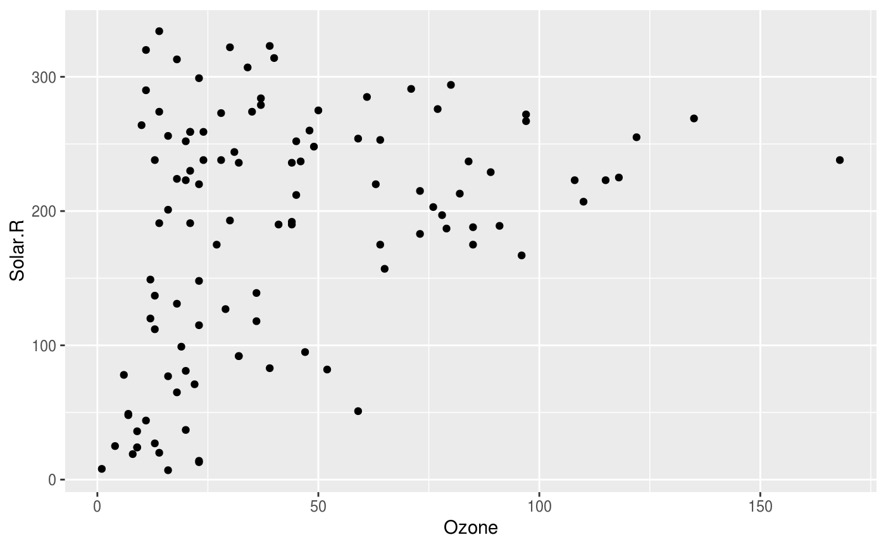
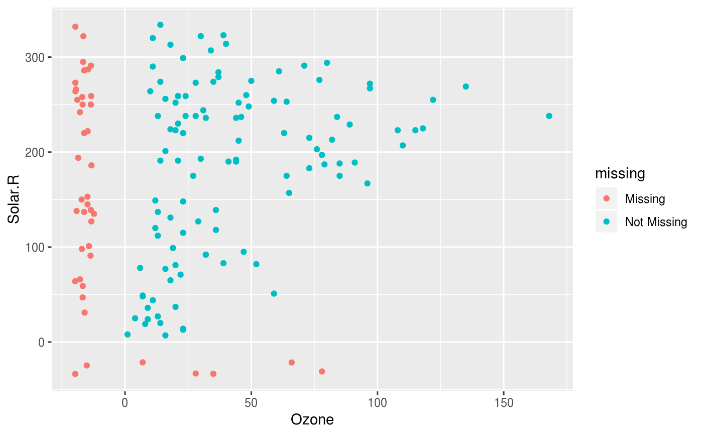
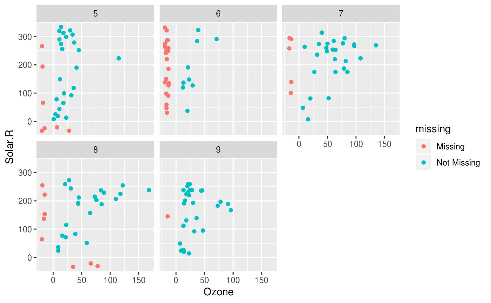

geom_miss_point provides a way to transform and plot missing
values in ggplot2. To do so it uses methods from ggobi to display missing
data points 10\
the same axis.
geom_miss_point( mapping = NULL, data = NULL, prop_below = 0.1, jitter = 0.05, stat = "miss_point", position = "identity", colour = ..missing.., na.rm = FALSE, show.legend = NA, inherit.aes = TRUE, ... )
| mapping | Set of aesthetic mappings created by |
|---|---|
| data | A data frame. If specified, overrides the default data frame defined at the top level of the plot. |
| prop_below | the degree to shift the values. The default is 0.1 |
| jitter | the amount of jitter to add. The default is 0.05 |
| stat | The statistical transformation to use on the data for this layer, as a string. |
| position | Position adjustment, either as a string, or the result of a call to a position adjustment function. |
| colour | the colour chosen for the aesthetic |
| na.rm | If |
| show.legend | logical. Should this layer be included in the legends?
|
| inherit.aes | If |
| ... | other arguments passed on to
|
Plot Missing Data Points
Warning message if na.rm = T is supplied.
[gg_miss_case()][gg_miss_case_cumsum()][gg_miss_fct()][gg_miss_span()][gg_miss_var()][gg_miss_var_cumsum()][gg_miss_which()]
library(ggplot2) # using regular geom_point() ggplot(airquality, aes(x = Ozone, y = Solar.R)) + geom_point()#> Warning: Removed 42 rows containing missing values (geom_point).# using facets ggplot(airquality, aes(x = Ozone, y = Solar.R)) + geom_miss_point() + facet_wrap(~Month)